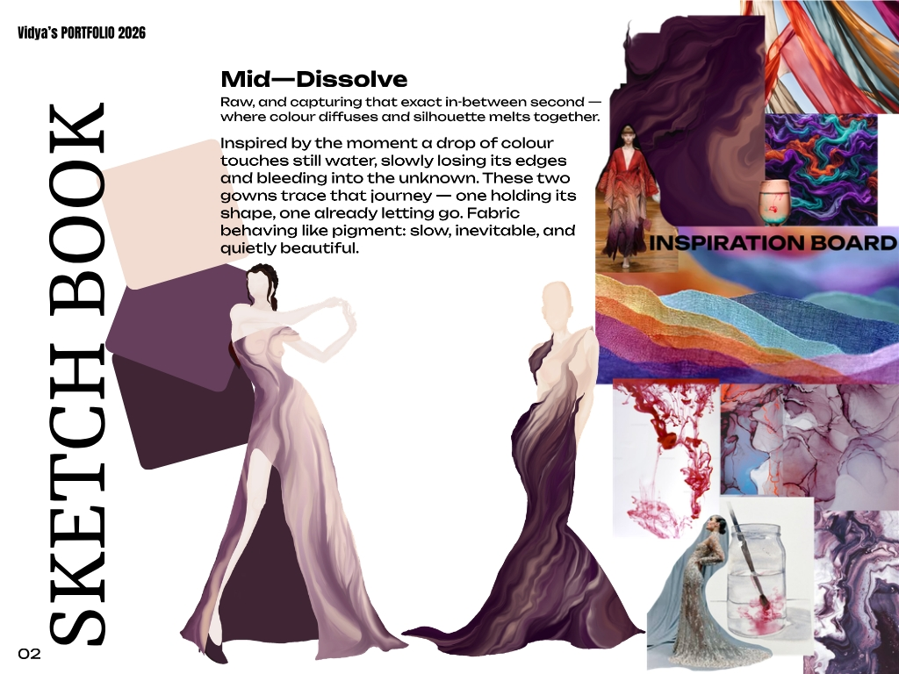
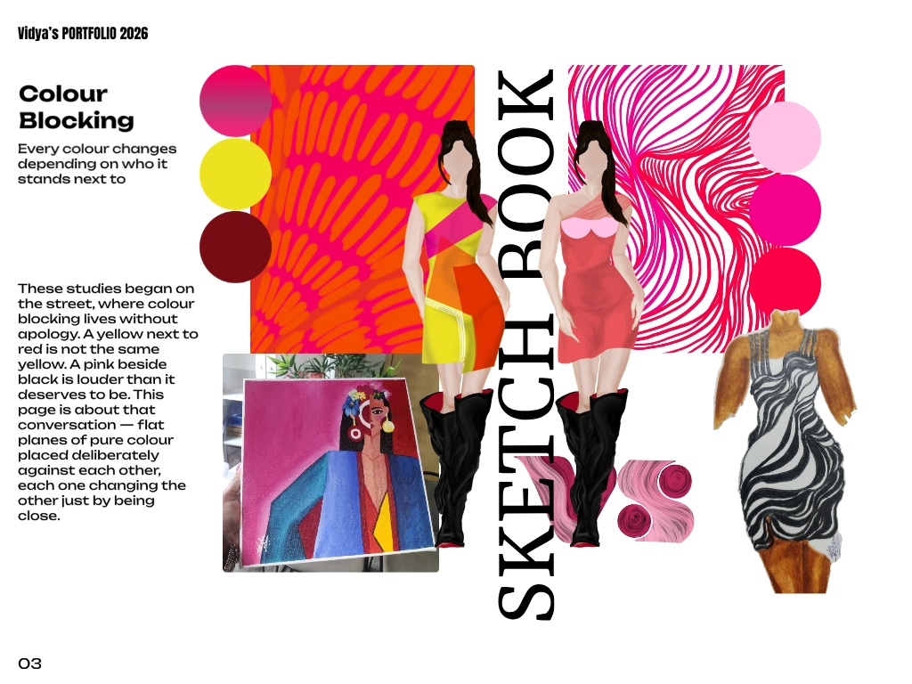
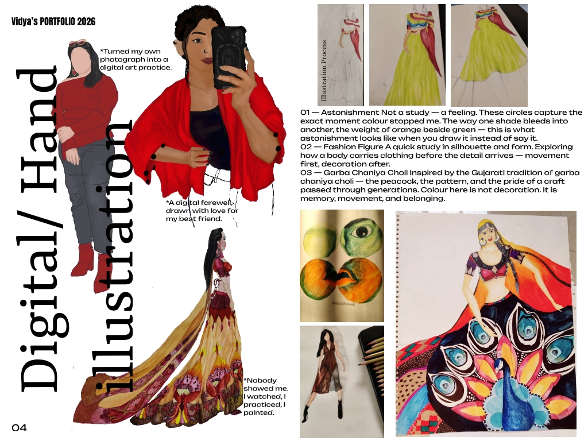
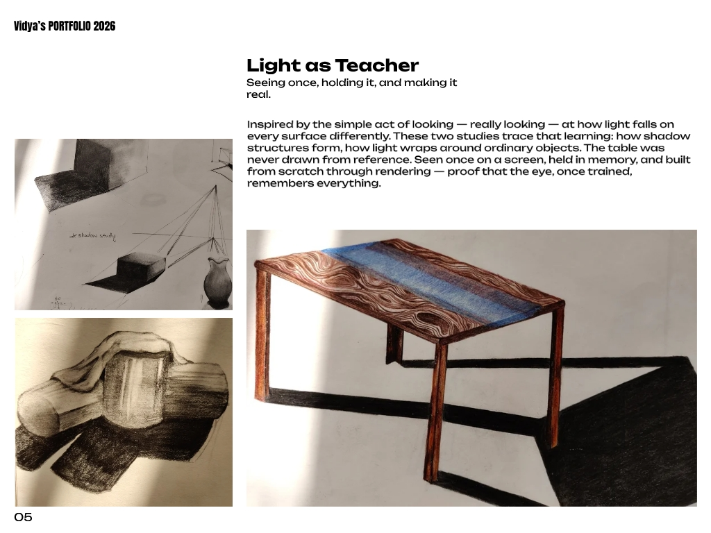
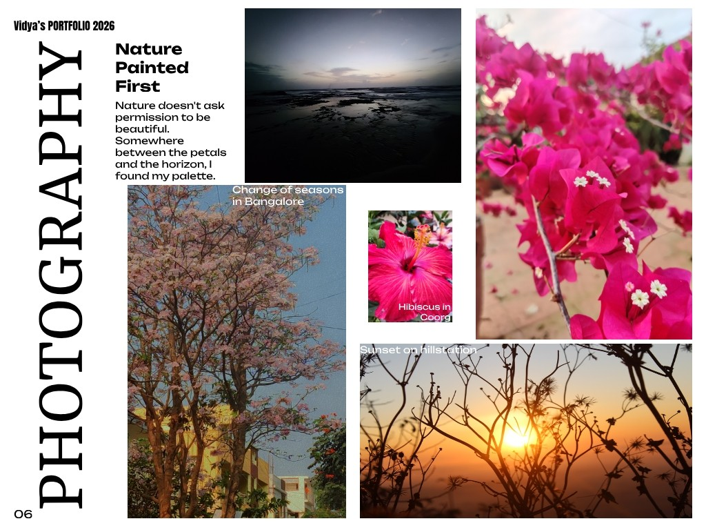

From my portfolio
Pages from my portfolio. Every drawing, painting and photograph here is my own.

Mid—Dissolve
Two gowns inspired by a drop of colour touching still water: one holding its shape, one already letting go.

Colour Blocking
Every colour changes depending on who it stands next to.

Digital / Hand illustration
Nobody showed me. I watched, I practised, I painted.

Light as Teacher
Seen once, held in memory, and built from scratch through rendering.

Nature Painted First
Somewhere between the petals and the horizon, I found my palette.